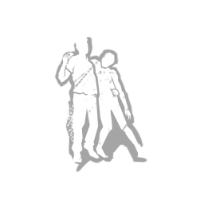

데바데기술
공용 기술
고유 기술

아무도버려두지않아
누군가를 남겨두고 도망치는 것은 상상도 할 수 없는 일이다. 출구에 전원이 공급되면, 다음을 획득하게 된다.
다른 생존자를 치유하거나 갈고리에서 구출 시, 블러드포인트를 50% / 75% / 100% 추가 획득하고,
이 항목의 행동 속도가 30% / 40% / 50% 빨라진다. 또한 다른 생존자의 오라를 볼 수 있게 된다.